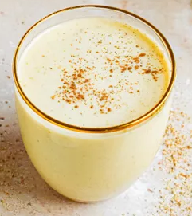

Eggnog Recipe

Description
Easy eggnog recipe that can optionally conclude alcohol.
Ingredients
- 2 cups Cream
- 2 cups Milk
- 6 Large Eggs
- 3/4 cups Sugar
- 1 cup Rum (or to taste)
- 1 tsp Vanilla Extract
- 2 Whole Cloves
- 1/2 tsp Cinnamon
- 1/2 tsp Ground Nutmeg
Steps
- Seperate your egg yolks and collect them in a bowl. Mix
egg yolks with sugar and thoroughly whisk.
- Mix together milk, cloves, and cinnamon
- Combine milk mixture with eggs and sugar and strain.
- Add vanilla and nutmeg to Cream and combine with milk
mixture.
- Add alcohol to product if desired.
Extras
There are many different ways to adjust this recipe. Spice
quantities can be adjusted as desired. Sugar can be replaced
with maple syrup or honey.
Note: inclusion of alcohol alongside allowing the eggnog to
sit overnight is a good countermeasure against salmonella in
the unlikely event that the eggs contained it.